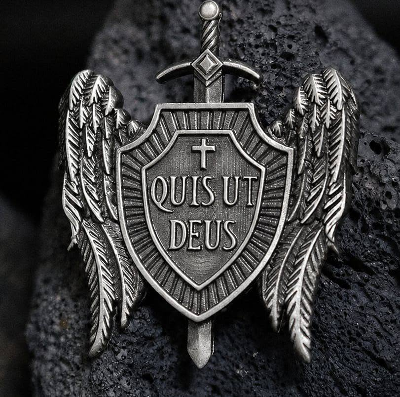

Welcome to St. Michael the Archangel Parish Traditional Roman Catholic Office of Exorcism Spiritual and Healing Ministry
Discover Catholic books, Church Fathers, Saints, Ecumenical Councils, Historical Documents, and Sacred Tradition.
Browse LibraryA Ministry of Deliverance, Spiritual Healing, Liberation, and Exorcism under the Society of St. Alphonsus Maria de Liguori (Alphonsian Redemptorists).
Browse Library